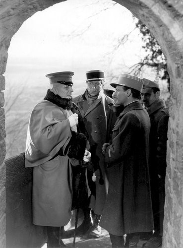

By Lucia Adams
More than just a classic film The Grand Illusion, in French with subtitles, is a comedic masterpiece teetering on the edge of tragedy, the finest war era film of the 20th century. Directed by Jean Renoir, second son of the Pierre-Auguste, it occupies its own special place in world history. When Hitler was set to move into Austria and Czechoslovakia it premiered at the Venice Film Festival in 1937 Mussolini the cinephile defying German pressure to eliminate it. Though Goering liked the tale of brotherly fighter pilots Goebbels declared it “Cinematic Public Enemy No. 1” and seized the negative.
Jean Renoir
In the summer of 1940, the Nazis were in Paris, Renoir fled, and the negative was spirited away across borders, and assumed destroyed in a 1942 Allied air raid. But a Nazi officer and film archivist called Frank Hensel had discovered it, shipping it to Berlin for safe keeping, and it surfaced seven decades later. On its 75th Anniversary, Rialto Pictures introduced an exquisite restoration, replacing the “restored” scratchy murky print of the 1960’s when nothing was known of this long lost negative. The new, digitally restored 35-millimeter print is the most beautiful black and white film I have ever seen, each scene as perfectly composed as a painting, the chiaroscuro balanced to create a three dimensional illusion.
The Grand Illusion, that there would never be another war, won a special award at the 1939 New York World’s Fair, and was the first foreign-language movie to be Oscar-nominated for Best Picture in 1938. Roosevelt declaring that “all the democracies in the world must see this film,” screened it at the White House for Eleanor’s birthday then it was shown throughout the country to rally Americans to the cause of a democratic Europe.
Renoir’s debt to Charlie Chaplin’s mockery of authority and military pretense, sans the slapstick, is unmistakable. Taking its title from Norman Angell’s book which won the Nobel prize in 1933 the theatre of the absurd script, so Ionesco and Brecht, by Renoir and Charles Spaak has two French pilots In World War I, the suave aristocrat Captain de Boeldieu with his elegant manners, pencil moustache and white kid gloves (Pierre Fresnaye) and the working-class mechanic, rather a bruiser, Lieutenant Maréchal, (Jean Gabin), shot down by Germans during Verdun.

Eric von Stroheim, Jean Gabin and Pierre Fresnay.
They are taken prisoner by the aristocratic monocle, elaborately bemedalled aviator Rittmeister von Rauffenstein (Erich von Stroheim) who orders a subordinate to find out if the downed pilots are officers and, if so, to invite them to lunch. The noblemen discover they have mutual acquaintances including a certain Fifi, recognizing each other as members of an elite whose customs, tastes and family connections reveal the solidarity of the upper classes crossing national boundaries.
The French prisoner has far more in common with his German jailer than with his fellow prisoners; in a melancholy lament for the vanishing of the aristocratic old world order Boeldieu tells his counterpart, “Neither you nor I can stop the march of time,” with a wistful regret reminiscent of Brideshead’s for the end of the imagined world of civilized, polished gentlemen replaced by the dreary subalterns. Waugh a snobby English arriviste was deadly serious while Renoir a socialist son of the French Revolution slyly mocked the aristocrats.
The Frenchmen of all classes are sent to one POW camp after another where they live in a peaceful playground with delicious care packages, theatrical rehearsals for vaudeville sketches like the cross-dressed “It’s a Long Way to Tipperary” by (of course!) British soldiers and a stirring, impromptu “La Marseillaise,” when the French recapture a village, as pulse pounding as it would be in Casablanca five years later.
Rosenthal, a central character (Marcel Dalio the croupier in Casablanca where Rick’s erstwhile mistress, Yvonne, is played by his wife Madeleine LeBeau,) a wealthy Jewish banker who has bought the chateau the de Boeldieu family can no longer afford is a geneous enchanting French POW who shares his luxurious food parcels. When they are all transferred to Wintersborn, an inescapable mountain fortress prison they again meet the commandant a disabled von Rauffenstein in a neck and back brace, wincing in pain from a war wound. He treats the prisoners like guests his German staff cutting the meat for a French soldier with a lame arm, apologizing to them all for having to keep them against their wills.

Two aristocrats, de Boeldieu and von Rauffenstein.
De Boeldieu volunteers to help Maréchal and Rosenthal escape though von Rauffenstein cannot believe why they would try to leave since they gave their word not to; during a search of their beds, he takes Boeldieu at this word that he has nothing to hide, since they share a gentleman’s code of honor though he obviously cannot accept the word of “a Maréchal or a Rosenthal.” De Boeldieu acts as a decoy while they shimmy down a wall to freedom and von Rauffenstein, a decent man even if German, discovers him on a rooftop playing a flute like a Diaghelev Pan.
He is forced to shoot, aims at his legs but fatally hits him in the stomach and the French nobleman lies dying, having sacrificed himself for Marechal and Rosenthal for whom he has no particular regard. Von Rauffenstein’s grief at his slaughter is so moving and painful because he knows the stupidity and waste as he cuts a potted geranium, the only flower in the fortress, the death of nobility clearly symbolized as de Boeldieu says, “For a commoner, dying in a war is a tragedy. But for you and I–it’s a good way out.”
Marcheal and Rosenthal trek through the snow to Switzerland, take refuge in the farmhouse of a good woman, a German, yes, called Ilsa, who has lost her husband and three brothers at Verdun. She takes them in, and falls in love with Marechal who from a sense of duty to the war effort keaves but will return to her after the war. The common man triumphed. the aristocrat died along with another “grand illusion” that the upper classes stand above war. Renoir’s sincere belief in the commonality of all human beings, prevails but that the conflict will be over soon is snappily dismissed is the grandest of all the grand illusions.
In this tragi-comedy there are many hilarious comic vignettes that slice through the tragedy such as the POW devoted to the Greek poet Pindar who sneers at the Germans who know nothing of the nuances of translation or the Russian prisoners gathering in the barracks, waiting to share a huge trunk of a care package with the caviar and vodka only to discover that the Empress of Russia has sent them BOOKS — food for the soul. A riot ensues.